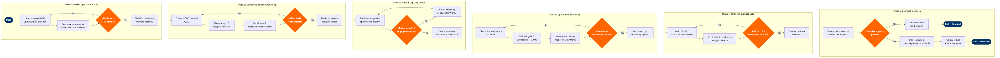

| Step | L4 Step Name | KPI / Target | Pain Point / Risk | Gate |
|---|---|---|---|---|
| 1.1 | Scan unserved O&D opportunities | Minimum 20 candidate markets identified per planning cycle | MIDT data excludes LCC-direct bookings, leading to demand underestimation in price-sensitive leisure markets | |
| 1.2 | Benchmark competitor schedules on candidates | Competitive gap identified for ≥60% of shortlisted markets | OAG data lags real-time charter and codeshare capacity additions by up to 3 weeks | |
| 1.3 | Screen markets against minimum demand threshold | Demand threshold screening accuracy ≥90% vs. post-launch actuals | Redshift demand cubes are refreshed weekly; intra-week traffic spikes from events or promotions not captured | ⚠ |
| 2.1 | Forecast 12-month O&D demand per market | Forecast MAPE ≤8% at 90-day horizon | SkyCAST models calibrated on existing network may not reflect latent demand in markets with no prior service | |
| 2.2 | Simulate network spill and recapture impact | Spill recapture rate ≥35% for new route | SkySYM simulations assume fixed itinerary preference weights; actual passenger path choice in new markets is untested | |
| 2.3 | Model yield and price elasticity | Projected RASM ≥ CASM + 15% margin at base-case load factor of 83% | NRM fare elasticity models trained on existing markets; new leisure markets may exhibit steeper price sensitivity than modelled | ⚠ |
| 2.4 | Produce consolidated revenue forecast report | Scorecard completed within 2 business days of demand model sign-off | Manual data collation from SkyCAST, SkySYM, and NRM increases error risk and delays review cycle | |
| 3.1 | Optimise fleet assignment for candidate route | Fleet utilisation ≥12.5 block hours/aircraft/day post-addition | SkyMAX optimisation can downgrade candidate route gauge when existing network utilisation is near ceiling, creating circular infeasibility | ⚠ |
| 3.2 | Evaluate frequency and timing trade-offs | Scheduling conflict rate <5% in SkyWORKS validation | SkyWORKS turnaround time constraints at congested focus-city stations (e.g. LAS, MDW) restrict viable departure windows to <3 options | |
| 3.3 | Confirm spare aircraft availability at launch date | Spare cover ratio ≥5% of active fleet on launch date | Boeing 737 MAX delivery delays (post-FAA recertification cycle) have repeatedly compressed launch windows by 6–18 months | |
| 4.1 | Check slot availability at origin and destination | Preferred slot obtained within ±30 min of target for ≥80% of requests | Slot-coordinated airports (Level 3) at international gateways impose 6–12 month lead times; historical precedence rules favour incumbents over new entrants | |
| 4.2 | Validate gate and ground handling feasibility | Gate conflict rate <2% for new route insertion | SITA AMS data quality at smaller domestic stations is often incomplete; manual verification with airport authority adds 1–2 weeks | |
| 4.3 | Assess crew pairing efficiency for new route | Crew cost per block hour for new route ≤ system average + 10% | Routes originating from non-crew-base stations require deadhead positioning, adding $800–$1,200/day per crew pair and inflating CASM | ⚠ |
| 5.1 | Build full-route P&L model | ROIC ≥12% in base-case scenario at month 12 | Airport fee structures at new international destinations often require renegotiation; provisional estimates in SAP can overstate profitability by 8–15% | |
| 5.2 | Run sensitivity and break-even load factor analysis | Break-even load factor ≤75%; downside P10 ROIC ≥6% | Sensitivity model inputs (fuel price, FX, competitor response) are manually refreshed quarterly; stale assumptions distort go/no-go threshold | ⚠ |
| 6.1 | Compile and submit commercial committee pack | Pack submission ≥10 business days before committee review date | Cross-functional sign-off (Revenue Mgmt, Ops, Finance) often delayed due to differing planning horizons; average pack completion takes 18 days vs. 10-day target | ⚠ |
| 6.2 | File approved schedule and slots in SkyWORKS | Schedule filed ≥120 days before service start (IATA SSIM standard) | Late approvals compress the SSIM filing window, risking GDS distribution gaps and reducing advance booking lead time below optimal 90-day curve | |
| 6.3 | Publish new route to GDS and NDC channels | GDS content live ≥90 days before first departure; NDC content live within 24 hours of GDS | ATPCO fare filing cycle runs twice daily; missed filing window delays public fare availability by up to 12 hours, impacting early adopter bookings on launch-day announcement |